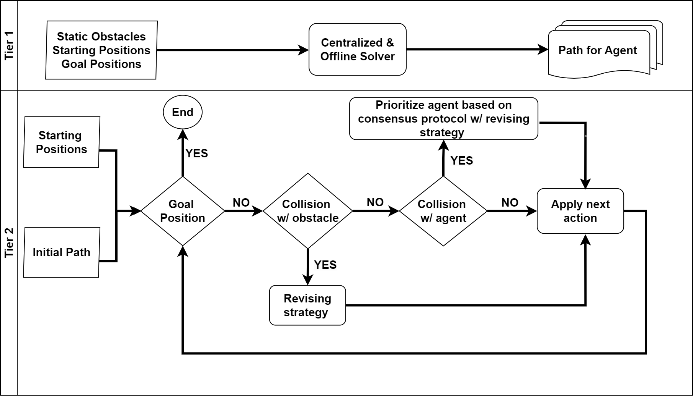
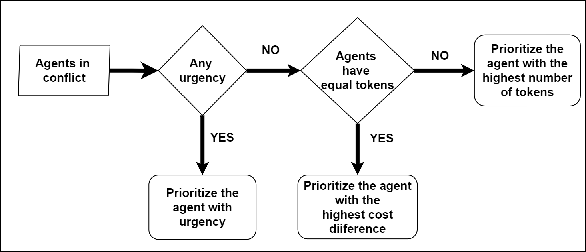
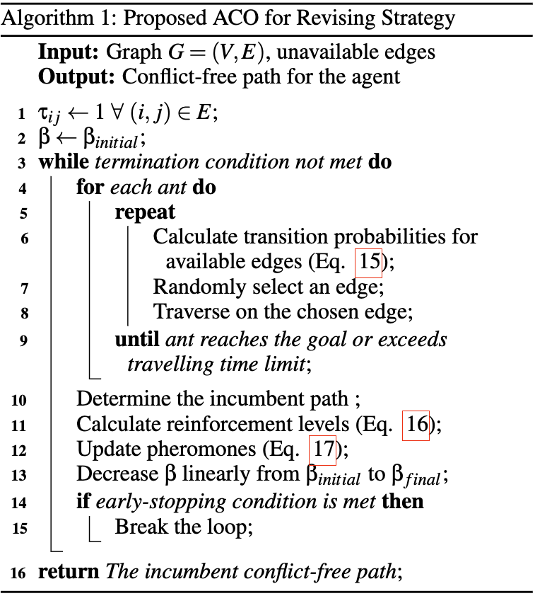
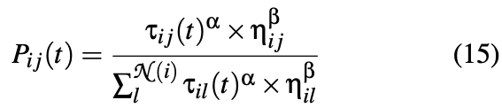
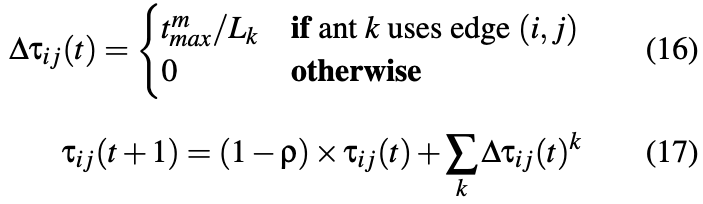
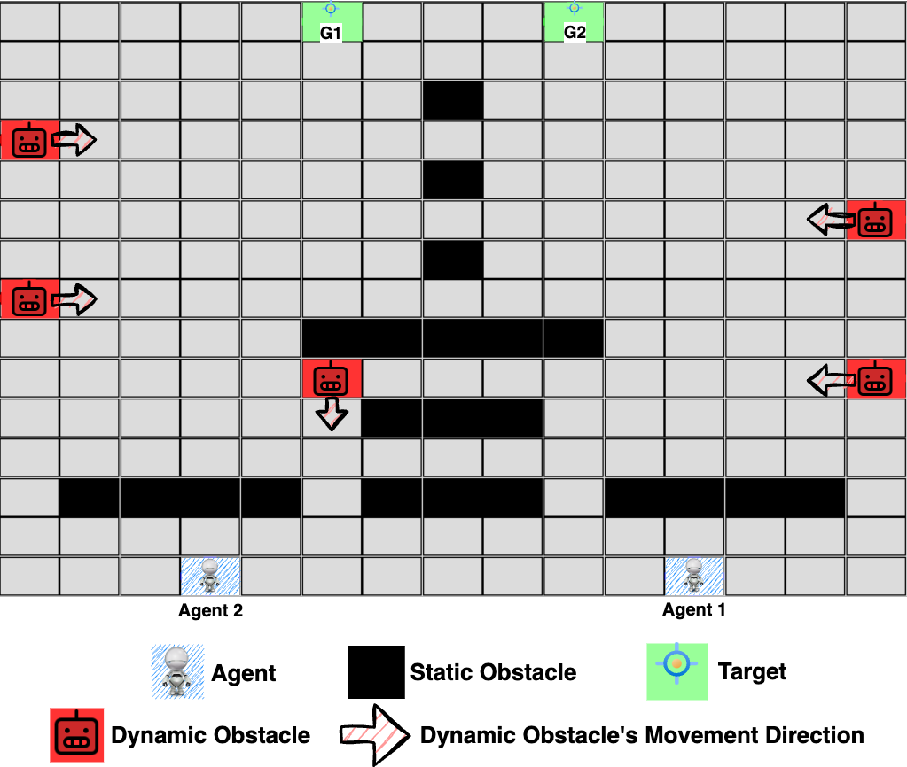

Depth-First Search
Implement depth_first_search with graph search in pacman/search.py.
This paper introduces a novel Dynamic and Partially Observable Multiagent Path-Finding (DPO-MAPF) problem and presents a multitier solution approach accordingly. Unlike traditional MAPF problems with static obstacles, DPO-MAPF involves dynamically moving obstacles that are partially observable and exhibit unpredictable behavior. Our multitier solution approach combines centralized planning with decentralized execution. In the first tier, we apply state-of-the-art centralized and offline path planning techniques to navigate around static, known obstacles (e.g., walls, buildings, mountains). In the second tier, we propose a decentralized and online conflict resolution mechanism to handle the uncertainties introduced by partially observable and dynamically moving obstacles (e.g., humans, vehicles, animals, and so on). This resolution employs a metaheuristic-based revision process guided by a consensus protocol to ensure fair and efficient path allocation among agents. Extensive simulati ons validate the proposed framework, demonstrating its effectiveness in finding valid solutions while ensuring fairness and adaptability in dynamic and uncertain environments.
Multiagent Path-Finding, Uncertainty, Ant Colony Optimization, Consensus
@-- --------------------------------------------------------------------------------------------------------------------------------------------------------------------------------------------------------------------------------- -- @-- --------------------------------------------------------------------------------------------------------------------------------------------------------------------------------------------------------------------------------- --The methodology presented in the paper "A Multitier Approach for Dynamic and Partially Observable Multiagent Path-Finding" involves a two-tiered strategy to solve a Multiagent Path-Finding (MAPF) problem in environments with both static obstacles and partially observable, dynamically moving obstacles:
Initially, a centralized algorithm (e.g., CBSH2-RTC or EECBS) generates conflict-free paths for agents, considering only static obstacles such as walls and buildings. This phase is executed offline and provides an initial plan for each agent.
Agents independently execute their initial paths. If conflicts arise with partially observable, dynamic obstacles (e.g., humans, vehicles), an online decentralized conflict resolution mechanism is triggered. This mechanism employs:
This multitier methodology leverages the strengths of centralized approaches (global optimality and planning) and decentralized approaches (scalability and adaptability), enhancing agents' adaptability and fairness in complex, uncertain environments.

Figure 1. Illustration of the Proposed Multitier Approach

Figure 2. Fair Token Protocol

Algorithm 1. Proposed ACO for Revising Strategy

Equation 15

Equation 16 and 17
The simulation setup described in the paper is designed specifically to evaluate the multitier approach for the Dynamic and Partially Observable Multiagent Path-Finding (DPO-MAPF) problem, as shown in Figure 1. Below is a short description of its key features:
The simulation operates on grid-based environments represented as graphs, where cells correspond to nodes and agent movement between adjacent cells maps to graph edges.
These obstacles move unpredictably. Agents can only detect them within a limited local vision — a 5×5 grid centered on the agent.
Each agent can perform the following actions: Up, Down, Left, Right, and Wait.
The goal is to guide agents safely from their initial positions to their goal destinations while handling partial observability and avoiding collisions.
Performance is assessed using the following metrics:
The simulation framework is implemented in Python and made publicly available on GitHub to support reproducibility and further research.
This setup enables extensive experimental evaluation of the proposed multitier strategy, demonstrating its adaptability and effectiveness across a variety of dynamic, partially observable environments.

Figure 3. Illustration of the Simulation Framework
This paper introduces the Dynamic and Partially Observable Multiagent Path-Finding (DPO-MAPF) problem, an extension of traditional MAPF that incorporates dynamic and partially observable obstacles.
To address this challenge, a multitier methodology is proposed, combining:
Experimental results demonstrate that:
In conclusion, this multitier approach offers a robust, fair, and efficient framework for solving complex MAPF problems in dynamic, partially observable environments — providing a solid foundation for future research in decentralized multi-agent coordination and planning under uncertainty.
@-- --------------------------------------------------------------------------------------------------------------------------------------------------------------------------------------------------------------------------------- -- @-- --------------------------------------------------------------------------------------------------------------------------------------------------------------------------------------------------------------------------------- -- @-- --------------------------------------------------------------------------------------------------------------------------------------------------------------------------------------------------------------------------------- -- @-- --------------------------------------------------------------------------------------------------------------------------------------------------------------------------------------------------------------------------------- -- @-- Divider with Title --Doğru, A., Alamdari, A. D., Balpınarlı, D., and Aydoğan, R. (2025). A Multitier Approach for Dynamic and Partially Observable Multiagent Path-Finding. In Proceedings of the 17th International Conference on Agents and Artificial Intelligence – Volume 3: ICAART; ISBN 978-989-758-737-5; ISSN 2184-433X, SciTePress, pages 562–573. DOI: 10.5220/0013159800003890
@conference{dogru2025multitier,
author={Anıl Doğru and Amin Deldari Alamdari and Duru Balpınarlı and Reyhan Aydoğan},
title={A Multitier Approach for Dynamic and Partially Observable Multiagent Path-Finding},
booktitle={Proceedings of the 17th International Conference on Agents and Artificial Intelligence – Volume 3: ICAART},
year={2025},
pages={562–573},
publisher={SciTePress},
organization={INSTICC},
doi={10.5220/0013159800003890},
isbn={978-989-758-737-5},
issn={2184-433X}}
TY - CONF
JO - Proceedings of the 17th International Conference on Agents and Artificial Intelligence - Volume 3: ICAART TI - A Multitier Approach for Dynamic and Partially Observable Multiagent Path-Finding SN - 978-989-758-737-5 IS - 2184-433X AU - Doğru, A. AU - Alamdari, A. AU - Balpınarlı, D. AU - Aydoğan, R. PY - 2025 SP - 562 EP - 573 DO - 10.5220/0013159800003890 PB - SciTePress
In this homework, you will implement classic AI search algorithms (DFS, BFS, UCS, and A*) and apply them to Pac-Man pathfinding tasks. You will also design problem formulations and heuristics for corners and food-collection challenges.
Berkeley Project 1 Page Repository READMESearchProblem API.python main.py
python main.py -l tinyMaze -p SearchAgent -a fn=depth_first_search
You should only edit: pacman/search.py and pacman/search_agents.py.
Implement depth_first_search with graph search in pacman/search.py.
Implement breadth_first_search using util.Queue.
Implement uniform_cost_search with cumulative-cost priorities.
Implement a_star_search using f(n) = g(n) + h(n).
Define state, goal test, and successor function for all-corners coverage.
Create a consistent heuristic for CornersProblem.
Design an admissible/consistent heuristic for FoodSearchProblem.
Implement nearest-food pathing in ClosestDotSearchAgent.
python grader/autograder.py python grader/autograder.py -q q1 python grader/autograder.py -q q8 python grader/autograder.py --no-graphics
| Component | Points |
|---|---|
| Q1–Q8 Code | 75 |
| Report | 25 |
| Total | 100 |